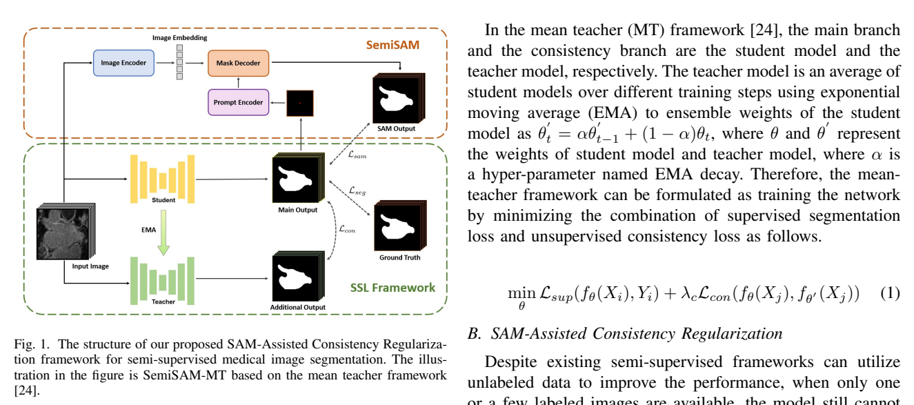
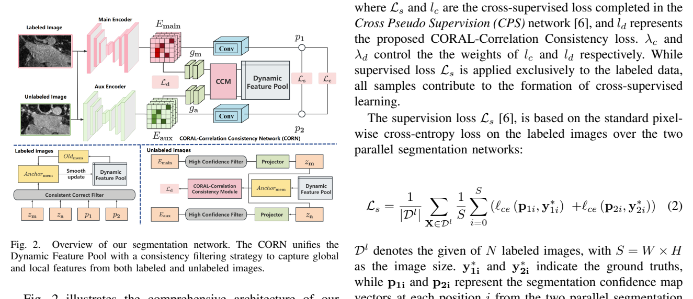
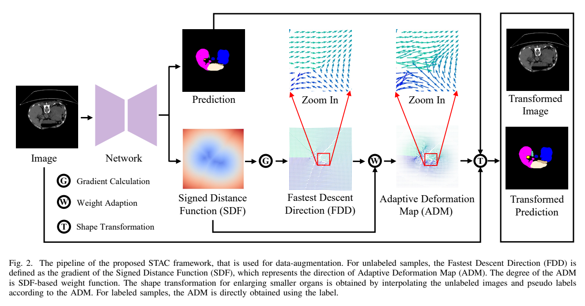
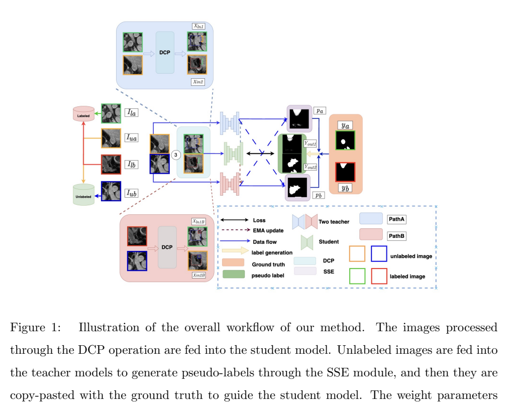

原论文流程图 · Figure 1 · PDF 第 2 页

Fig.1. ThestructureofourproposedSAM-AssistedConsistencyRegulariza- tion framework for semi-supervised medical image segmentation. The illus- Despite existing semi-supervised frameworks can utilize trationinthefigureisSemiSAM-MTbasedonthemeanteacherframework unlabeled data to improve the performance, when only one 原文来源
医学图像分割依赖专家逐像素/体素标注，成本高；半监督学习（SSL）虽可利用无标注数据，但在仅 1 个或极少数标注病例时，与全监督方法仍有明显差距。作者指出，一致性正则化在标注极少时可能让模型产生“相似但错误”的预测，忽略目标固有信息 [p. 2]。
SAM 等分割基础模型具备零样本泛化能力，但直接用于医学图像效果有限；已有工作将其作为伪标签生成器 [p. 1]。本文的动机是：半监督模型的粗分割虽不精确，但足以提供定位信息来生成 SAM 的提示点，从而把 SAM 的伪标签作为额外监督信号，增强一致性正则化 [p. 1–2]。
记标注集 $D_L={X_i,Y_i}{i=1}^M$，无标注集 $D_U={X_j}{j=1}^N$，$M \ll N$。采用 mean teacher（MT）框架：学生模型 $f_\theta$ 与教师模型 $f_{\theta'}$，教师权重由学生权重指数滑动平均更新：$\theta't=\alpha\theta'{t-1}+(1-\alpha)\theta_t$，$\alpha$ 为 EMA 衰减系数 [p. 2]。训练目标为
$$\min_\theta L_{sup}(f_\theta(X_i),Y_i)+\lambda_c L_{con}(f_\theta(X_j),f_{\theta'}(X_j)) \quad (1)$$
其中 $L_{sup}$ 为标注数据的监督分割损失，$L_{con}$ 为主分支与教师分支在无标注数据上的一致性损失，$\lambda_c$ 控制其权重 [p. 2]。
整体结构见 Fig. 1（第 2 页）：在经典 SSL 框架上增加 SAM 监督分支。作者使用 SAM-Med3D 以处理 3D 体数据，其结构包括 ViT 图像编码器 $I$、提示编码器 $P$ 和轻量掩码解码器 $M$ [p. 2]。主分支输出被用作生成提示的 proposal：
$$F_\Theta(X_j)=M[I(X_j)+P(f_\theta(X_j))] \quad (2)$$
其中 $\Theta$ 为 SAM 权重，$F_\Theta(X_j)$ 为 SAM 生成的伪标签 [p. 2]。
为减少粗分割产生的噪声提示，作者采用不确定性感知策略，只从低不确定性区域生成提示点，理由是低不确定性区域定位更可靠 [p. 2]。随后在无标注数据上计算主分支输出与 SAM 伪标签之间的一致性损失 $L_{sam}$，最终目标为
$$\min_\theta L_{sup}(f_\theta(X_i),Y_i)+\lambda_c L_{con}(f_\theta(X_j),f_{\theta'}(X_j))+\lambda_s L_{con}(f_\theta(X_j),F_\Theta(X_j)) \quad (3)$$
注意式 (3) 中 SAM 项写作 $L_{con}$，但正文称其为 $L_{sam}$，符号略有不一致 [p. 3]。权重设计为：$\lambda_c=0.1e^{-5(1-t/t_{max})}$ 随训练上升，$\lambda_s=0.1e^{-5(t/t_{max})}$ 随训练下降，即早期强调 SAM 引导、后期减弱以避免误导 [p. 3]。
作者主张的贡献是：提出一种简单高效的策略，将 SAM 作为额外监督分支接入一致性正则化半监督框架；利用半监督模型输出自动生成提示，无需人工提示；在极少标注场景下显著提升现有框架性能，并可作为即插即用模块 [p. 1, p. 4]。
我的解读：核心新颖点在于“用弱模型给强基础模型提供定位提示，再用强模型伪标签反哺弱模型”的闭环，而非新的网络结构或损失函数；其有效性高度依赖 SAM-Med3D 在目标上的零样本质量。
Table I（第 3 页）显示：2D SAM 在 1/2/5/10 倍切片数提示点下 Dice 为 41.98/46.11/58.90/71.38%；SAM-Med3D 在 1/2/5/10 个提示点下为 56.51/63.96/70.28/73.78%。全监督 V-Net 在 1/2/4/8/80 个标注病例下 Dice 为 17.06/40.48/54.43/76.09/91.14%。SemiSAM-MT 在 1/2/4 个标注病例下 Dice 为 41.38/69.46/80.42%，均高于同标注量的 MT（30.60/58.17/72.40%）[p. 3]。
Table II（第 4 页）给出 1/79、2/78、4/76、8/72 标注/无标注设置下的结果。以 1 标注病例为例：UA-MT 31.66%、Ent-Mini 31.59%、DTC 36.94%、DTML 37.31%、MT 30.60%，SemiSAM-MT 为 41.38%（Dice），Jaccard 27.95%，ASD 20.60，95HD 45.79 [p. 4]。2 标注病例：SemiSAM-MT Dice 69.46%，低于 DTML 的 67.80%？——实际 69.46% 高于 DTML 67.80%，但 95HD 31.67 高于 DTML 的 22.81，说明边界指标并非全面占优 [p. 4]。4 标注病例：SemiSAM-MT Dice 80.42%，高于 DTML 79.46%；95HD 18.23 优于 DTML 24.81 [p. 4]。8 标注病例：SemiSAM-MT Dice 84.45%，低于 UA-MT 84.25%？——84.45% 略高于 UA-MT 84.25%，但低于 Ent-Mini 86.43%、DTC 86.57%、DTML 87.13% [p. 4]。作者据此承认，标注量较大（如 10%）时简单一致性约束提升有限，因为训练型分割方法已超过 SAM 零样本性能 [p. 4]。
本文没有独立的消融表；Table II 中 MT 与 +SemiSAM 的成对比较可视为消融证据，说明增益来自 SAM 分支而非框架本身 [p. 4]。Fig. 2（第 4 页）展示 3D 重建与 2D 分割的定性比较，但正文未给出对应定量指标 [p. 4]。
支持的结论：在 LA 数据集、V-Net + SAM-Med3D、1–4 个标注病例条件下，SemiSAM 确实提升 MT 的 Dice，并在 1 和 4 标注病例下优于所列半监督基线；8 标注病例时优势消失甚至落后于部分基线，与作者“标注较多时提升有限”的陈述一致 [p. 3–4]。
局限与缺失证据：仅在一个数据集、一个半监督框架（MT）上验证，作者自述实验较简单 [p. 4]；未报告提示点数量、不确定性阈值、SAM 推理频率、$\lambda_s$ 的具体消融；未报告多次运行方差或统计检验；Table II 中 2 标注病例的 95HD 劣于 DTML，说明边界精度并非一致改善 [p. 4]。此外，式 (3) 的符号与正文 $L_{sam}$ 不一致，需注意 [p. 3]。
已报告：LA 数据集 80/20 划分；V-Net 与 SAM-Med3D；SGD，lr=0.01，每 2500 迭代衰减 10 倍，6000 迭代；patch 128×128×128；$\lambda_c$ 与 $\lambda_s$ 的 ramp 公式；A100 GPU；代码链接 [p. 3]。
未报告或无法确认：batch size、EMA 衰减 $\alpha$ 的具体值、提示点生成的具体规则与数量、不确定性度量方式及阈值、SAM-Med3D 是否冻结、SAM 分支前向频率、数据预处理与增强细节、推理时的集成方式。这些信息在正文中未给出，复现时需自行设定并明确标注为假设。
原论文流程图 · Figure 2 · PDF 第 2 页

Fig. 2. Overview of our segmentation network. The CORN unifies the Dl denotes the given of N labeled images, with S =W ×H DynamicFeaturePoolwithaconsistencyfilteringstrategytocaptureglobal andlocalfeaturesfrombothlabeledandunlabeledimages. as the image size. y 1 ∗ i and y 2 ∗ i indicate the ground truths, while p and p represent the segmentation confidence map 原文来源
左心房（LA）在心脏 MRI 中对比度衰减、腔体较小且壁薄，精确分割对心脏疾病诊断与监测很重要 [p. 1]。深度分割依赖大量标注，而医学图像标注稀缺，因此半监督学习（SSL）成为可行路线 [p. 1]。作者指出，现有 SSL 分割方法多直接使用像素值寻找有/无标签数据中的相似特征，难以准确刻画左心房复杂的附着结构（密度不一致区域、向外弯曲区域），并容易产生错误伪标签；错误伪标签累积会误导模型 [p. 1]。此外，以往方法以像素级监督为主，偏重局部信息而忽视全局形状 [p. 1]。作者还强调，直接从无标签数据构造特征会带来“Sample Selection Bias”，导致监督不可靠 [p. 1]。
整体框架见图 2 [p. 2]：双并行编码器（主编码器 Emain 与辅助编码器 Eaux）分别提取特征并输出分割置信图；分割结果经投影头送入动态特征池（DFP）做特征筛选与动态更新；DFP 输出的高质量锚点特征进入 CORAL-Correlation 一致性模块（CCM），对齐有标签（源域）与无标签（目标域）特征的二阶统计分布。
总损失为 L = Ls + λc·lc + λd·ld（式 1）[p. 2]。其中 Ls 是仅在标注数据上计算的像素级交叉熵监督（式 2），lc 是 CPS 式双向交叉伪监督损失（式 3），ld 是所提出的 CORAL-Correlation 一致性损失（式 6）。λc、λd 控制后两项权重 [p. 2]。
CCM 的核心：设投影头 gm、ga 分别接在主/辅编码器后，zm、za ∈ R^{m×c'} 为无标签样本匹配位置上的两组特征嵌入（m 为采样特征数，c' 为投影维度）；zp ∈ R^{n×c'} 为有标签数据采样的锚点特征（n 为锚点数）。CORAL 损失定义为源与目标特征协方差矩阵之差的 Frobenius 范数平方，并除以 4c'^2（式 4）[p. 3]。随后构造 CORAL-Correlation 矩阵 CORRmp ∈ R^{m×n}，其元素为各锚点与各无标签特征之间的 CORAL 距离（式 5）[p. 3]；同理用 za 替换 zm 得到 CORRap。最终 ld 为两个分支相关矩阵之间的交叉熵（式 6），即约束两条分支的相关性分布一致 [p. 3]。
DFP：为每个有标签训练实例初始化 N 个槽位，用 gm、ga 投影的有标签特征动态更新锚点嵌入；仅从 Emain 与 Eaux 预测一致的像素位置选取特征，以保证可靠性；采用可调权重的旧/新特征平均融合，并借鉴动量对比的 query-like 机制刷新槽位 [p. 3]。锚点采样策略：先找两网络预测一致的像素，再按类别按置信度排序，取每类前 i 个像素特征，共 s = i×C 个（C 为类别数）；同时从特征池 P 中每类随机选 j 个嵌入以增加多样性；并随机选取一部分低置信度特征以防过拟合，最终共 n = j×C 个嵌入 [p. 3]。
作者声称的贡献有三点 [p. 2]：(1) 提出 CORN，利用二阶统计特征同时捕捉全局结构与局部细节；(2) 提出 DFP，用置信度过滤与一致性策略减轻无标签数据中不准确特征的负面影响；(3) 在 LA 数据集上广泛实验，证明优于此前 SOTA。我的解读：方法的新意主要在于把 CORAL 的协方差对齐思想从域适应迁移到半监督分割的特征一致性正则，并用 DFP 处理无标签特征筛选；但整体仍建立在 CPS 双网络框架之上，属于模块级创新而非全新范式。
数据集：LA 数据集 [1]，100 例钆增强 MRI，各向同性分辨率 0.6253 mm；按 [20] 划分 80 例训练、20 例测试 [p. 3]。
实现：PyTorch 2.4.0 + CUDA 12.1，单张 NVIDIA A100；随机裁剪 112×112×80 子体积；骨干为 V-Net [21]；batch size 4（有/无标签各半）；SGD，学习率 0.01，动量 0.9，权重衰减 1×10^-4，训练 1.5×10^4 次迭代；时间相关高斯函数 λ(t)=β·e^{(-5×(1-t/tmax))^2}，β=1.00，λc 与 λd 初始均为 0.1；CCM 参数 c'=64、j=256、i=12800；推理用滑动窗口、无后处理 [p. 4]。
评价指标：Dice(%)↑、Jaccard(%)↑、95HD(voxel)↓、ASD(voxel)↓ [p. 4]。
主要结果（表 I）[p. 4]：5% 标注（4 例有标签/76 例无标签）下，CORN 为 Dice 88.23、Jaccard 79.12、95HD 9.51、ASD 1.73；对比 CAML 86.78/75.97/10.34/2.89、MC-Net+ 83.23/71.70/14.92/3.43、SS-Net 83.33/71.79/15.70/4.33、DTC 80.14/67.88/24.08/7.18。10% 标注（8/72）下 CORN 为 89.70/81.45/7.26/1.62，对比 CAML 89.33/80.17/8.82/2.08、MC-Net+ 87.68/78.27/10.35/1.85、CE-MT 87.34/77.91/8.79/2.12。20% 标注（16/64）下 CORN 为 91.22/83.96/5.34/1.54，对比 CAML 90.37/82.56/5.64/1.72、MC-Net+ 90.60/82.93/6.27/1.58。全监督 V-Net（80 例）为 90.98/83.61/8.58/2.10 [p. 4]。作者称 20% 时 91.22% Dice 已非常接近全监督模型；5% 时 95HD 比此前 SOTA 低 1.31%、ASD 低 1.00% [p. 4]。
消融（表 II，基线 MC-Net）[p. 5]：5% 标注下 Baseline 为 74.79/61.91/22.93/7.01；+CCM 为 87.67/78.24/10.23/1.83；+DFP 为 87.74/78.33/10.82/1.95；两者合用为 88.23/79.12/9.51/1.73。10% 下 Baseline 79.75/68.82/15.74/4.27，+CCM 89.79/81.62/7.41/1.73，+DFP 89.64/81.42/7.57/1.78，合用 89.70/81.45/7.26/1.62。20% 下 Baseline 86.50/77.50/10.90/2.91，+CCM 90.91/83.47/5.73/1.51，+DFP 89.98/82.56/5.94/1.59，合用 91.22/83.96/5.34/1.54。作者称两模块合用带来 Dice +13.25%、95HD +13.42%、ASD +5.28% 的提升（5% 标注），并称 +CCM 单独带来 95HD 12.7% 提升 [p. 5]。需注意表 II 中部分数字排版粘连（如 10.23 与 1.83），上述数值按可辨认的列位置读取，存在一定不确定性。
域对齐分析：作者用 CORAL 损失曲线（图 3）说明训练中损失稳定下降对应域对齐改善 [p. 4]；但未给出定量对齐指标。
支持的结论：在 LA 数据集、给定标注比例与所列基线条件下，CORN 在四项指标上均取得表 I 中的最优值；消融表明 CCM 与 DFP 各自及组合均优于基线，尤其 5% 低标注场景提升明显。作者关于“避免分割断裂、改善边界细节”的说法主要依赖图 1 的可视化与 95HD/ASD 数值，属于间接证据 [p. 1–2, p. 4]。
局限与缺失证据：仅在一个数据集（LA）上验证，未报告跨数据集或跨中心结果；未报告多次运行的均值/方差或统计显著性检验；未报告参数量、推理时间或显存开销；λc、λd 的敏感性分析缺失；DFP 中 N、融合权重、低置信度采样比例等未明确给出；表 II 部分数字排版不清，个别数值需谨慎对待；图 1 的可视化结论未量化。
已报告：数据划分 80/20；裁剪 112×112×80；V-Net 骨干；batch 4（有/无标签各半）；SGD lr=0.01、momentum=0.9、weight decay=1e-4；1.5×10^4 迭代；λ(t) 公式与 β=1.00、λc=λd=0.1 初始值；c'=64、j=256、i=12800；滑动窗口推理、无后处理 [p. 3–4]。未报告：DFP 槽位数 N、新旧特征融合权重的具体形式与取值、低置信度特征采样比例、投影头结构、数据预处理/归一化细节、随机种子与硬件以外环境、代码与预训练权重链接。复现时应先按上述设置搭建 CPS 双 V-Net 基线，再依次加入 CCM 与 DFP，并以表 II 的 5% 设置作为对照起点。
原论文流程图 · Figure 2 · PDF 第 3 页

Fig. 2. The pipeline of the proposed STAC framework, that is used for data-augmentation. For unlabeled samples, the Fastest Descent Direction (FDD) is definedasthegradientoftheSignedDistanceFunction(SDF),whichrepresentsthedirectionofAdaptiveDeformationMap(ADM).ThedegreeoftheADM is SDF-based weight function. The shape transformation for enlarging smaller organs is obtained by interpolating the unlabeled images and pseudo labels accordingtotheADM.Forlabeledsamples,theADMisdirectlyobtainedusingthelabel. 原文来源
论文针对3D医学图像半监督分割中的跨器官类不平衡：人体不同器官体素数差异很大，小器官（如肾上腺、胆囊、十二指肠等）在损失中占比低，导致半监督方法对其表征和伪标签质量较差[p. 1]。作者指出，已有类不平衡SSL工作主要从损失重加权、采样、伪标签校正或分类器去偏等角度处理（如CReST、CLD、DHC），但“没有从数据层面的直观角度解决”——即某些器官本身太小、体素太少[p. 1][p. 3]。因此本文的思路是直接在数据层面把小器官“放大”，以平衡各类体素分布。
作者借用主动轮廓的曲线演化：曲线沿法向以速度V演化，∂C/∂t = V·N；水平集用函数φ的零水平集隐式表示曲线，演化方程为 ∂φ/∂t = V||∇φ||[p. 3]。这为“沿法向形变、用SDF作水平集函数”提供依据。
对标注样本(X_l, Y)，设少数类集合为M，待放大的器官区域 O = {p | Y(p) ∈ M}。定义SDF： - p在O内部：φ_O(p) = −inf_{q∈∂O} ||p−q||₂； - p在边界∂O：φ_O(p)=0； - p在O外部：φ_O(p)=+inf_{q∈∂O} ||p−q||₂[p. 4, Eq.(1)]。
SDF的法向为 N_O = (∂φ_O/∂x, ∂φ_O/∂y, ∂φ_O/∂z)。为让远离器官的体素不被改变，设计基于SDF的权重： W_O(x,y,z) = α × exp(β × |φ_O(x,y,z)|) [p. 4, Eq.(2)]， 其中α、β为超参数。自适应形变图（ADM）为 D_O = W_O × N_O [p. 4, Eq.(3)]。
随后按形变图对图像和标签做坐标重采样： X_transformed(x,y,z) = X_l(x + (∂φ_O/∂x)·W_O, y + (∂φ_O/∂y)·W_O, z + (∂φ_O/∂z)·W_O) [p. 4, Eq.(4)]， Y_transformed同理 [p. 4, Eq.(5)]。对无标注样本X_u，用网络预测的伪SDF φ_pre 计算形变图，再对X_u及其伪标签Ŷ做同样变换[p. 4]。图2（p. 3）给出整体流程：无标注样本的“最快下降方向(FDD)”取SDF梯度，形变程度由SDF权重函数控制；有标注样本直接用标签得到ADM。
STAC被设计为即插即用，可嵌入任意SSL方法；论文以双网络互监督为示例[p. 4]。每个网络i∈{1,2}含特征提取f_i、分割头h_i，并额外增加一个回归头g_i预测SDF。
有标注数据损失： - 分割：L_l^seg = ℓ_ce(P_l^1, Y) + ℓ_ce(P_l^2, Y) [p. 4, Eq.(6)]； - SDF回归：L_l^sdf = ||φ_pre^1 − φ_Y||₂ + ||φ_pre^2 − φ_Y||₂ [p. 4, Eq.(7)]。
无标注数据互监督损失： - 分割：L_u^seg = ℓ_ce(P_u^1, Ŷ^2) + ℓ_dc(P_u^2, Ŷ^1) [p. 4, Eq.(8)]，其中Ŷ^1、Ŷ^2分别来自P_u^1、P_u^2； - SDF一致性：L_u^sdf = ||φ_pre^1 − φ_pre^2||₂ [p. 4, Eq.(9)]。
作者总结：方法本质是在基础网络上增加一个SDF预测头及对应损失，并在训练中用X_transformed与Y_transformed作为数据增强[p. 4]。
作者声称的贡献是：提出STAC，用SDF作为水平集函数、沿SDF最速下降方向（法向）形变体素以放大较小器官；设计SDF权重函数使远离器官的体素保持不变；将STAC作为训练期数据增强，并在两个基准上显著优于若干SOTA[p. 1][p. 4][p. 6]。
我的解读：其新颖点主要在于把主动轮廓/水平集的“沿法向演化”转化为可微/可重采样的数据增强算子，并用SDF权重限制影响范围；与弹性形变等通用增强相比，STAC是类别定向的（只放大少数类），这是其与普通形状增强的关键区别。但论文并未从理论上证明形变后分布与真实分布一致，主要证据是经验性消融与对比。
支持的结论：在作者设定的两个数据集与标签预算下，STAC叠加到四个类不平衡SSL基线上普遍提升Dice，且AMOS 2%下DHC+STAC的+8.2%是报告的最大增益[p. 5][p. 6]。消融支持“沿法向的SDF形变优于随机弹性/解剖先验形变”以及“α=1、β=−1较优”的经验主张[p. 6]。
局限与缺失证据： - 训练细节（backbone、优化器、学习率、训练轮数、批大小、伪标签阈值、α/β是否固定为1/−1用于所有主实验）未在正文明确报告，复现性受限。 - 表I、II、VI、VII在PDF文本抽取中列对齐严重错乱，逐类数值难以可靠辨认；本文只引用正文明确概括的平均Dice与增益，未逐类核对。 - 仅在两个腹部多器官数据集上验证，未报告其他模态/器官体系；对“形变后图像是否保持解剖合理性”仅有定性图与ASD间接证据，缺少放射科医生评估或分布检验。 - 未报告计算开销、形变带来的预处理时间，也未讨论形变可能造成的标签重叠/拓扑错误。
已报告：AMOS 216/24/120划分、15类；Synapse 20/4/6划分；标签比例AMOS 2%/5%、Synapse 10%/20%；指标Dice与ASD；基线CReST、SimiS、CLD、DHC；双网络互监督、交叉熵分割损失、SDF L2回归/一致性损失；形变公式Eq.(1)–(5)；最佳α=1、β=−1（AMOS 5% DHC基线调参）[p. 4][p. 5][p. 6]。代码链接在摘要中给出。
未报告/需查代码：具体backbone与初始化、优化器与学习率、训练迭代/早停、批大小与patch尺寸、伪标签生成阈值、SDF标签的截断距离、形变插值方式（如三线性）、α/β在主实验中的取值、随机种子与重复次数、显著性检验。上述信息在正文中未明确说明，复现时应以作者公开代码为准，不能从本文推断。
本篇未找到可可靠提取的方法流程图，请查看原文 PDF。
半监督医学图像分割旨在利用大量无标注数据降低标注成本。FixMatch 的弱-强一致性（弱增强预测作伪标签约束强增强预测）在分类中表现突出，作者称其在医学分割上也有竞争力，因此选为基线 [p. 1]。作者指出 FixMatch 直接迁移到分割存在两个被忽视的问题：
作者用 Grad-CAM 和 Myo 类体素核密度估计展示 FixMatch 的分布不匹配，SemSim 可缩小该差距 [p. 2, Fig. 3]。这是作者的主张与可视化证据，非独立统计检验。
对无标注图像 x_u，弱增强 A_w 得 p_w=F(A_w(x_u))，强增强 A_s 得 p_s=F(A_s(x_u))。无监督损失为
L_u = (1/|B_u|) Σ 1(max(p_w)≥τ) ⊙ L_dice(p_w, p_s)，
其中 B_u 为无标注批，τ 为置信阈值，1(·) 过滤低置信伪标签 [p. 3, Eq.1]。监督损失 L_s = ½(L_ce(p_l,y_l)+L_dice(p_l,y_l)) [p. 3, Eq.2]，总目标 L=λ_s L_s+λ_u L_u [p. 3, Eq.3]。
强增强视图 x_s1 经编码器 h_θ 和多尺度 SFM 得增强特征 f̃_s1u∈R^{D×H×W}，reshape 为 D×HW 后计算亲和图 M∈R^{HW×HW}：M(k1,k2)=softmax(⟨f̃(i1,j1), f̃(i2,j2)⟩/(‖f̃(i1,j1)‖₂‖f̃(i2,j2)‖₂)) [p. 3, Eq.4]。修正预测 p_in = I(p_s)+I(p_s)·M，I(·) 为双线性插值以匹配形状 [p. 3, Eq.5]。弱视图同理得 p_w1。约束为 L_intra=(1/|B_u|)Σ1(max(p_w1)≥τ)⊙L_dice(p_w1,p_in) [p. 3, Eq.6]。
1) 标注批类统计：将标注特征 f̃Bl 划分为 N 个 δ×δ 子区域 Ω={Λ_n}，在每个子区域内按类平均得局部原型 G_c^{Λ_n}=Σ{i∈Λ_n}1(y_Bl(i)=c)⊙f̃Bl(i) / Σ{i∈Λ_n}1(y_Bl(i)=c) [p. 4, Eq.7]。作者认为全局原型会因背景空间异质而不合理平均。
2) 动态查询：对无标注特征 f̃_s2u 做相同区域划分，计算与匹配子区域原型集的余弦相似度 m^{Λ_n}(i,j)=cos(f̃_s2u(i), G^{Λ_n}(j)) [p. 4, Eq.8]，得到相似度图 m∈R^{|Bl|×C×H×W}，再经 softmax 聚合为 p_cr(c)=Σ_j e^{m(j,c)} / Σ_c Σ_j e^{m(j,c)} [p. 4, Eq.9]。
3) 不确定性估计：计算批平均 m̄=(1/|Bl|)Σ_j m(j) [p. 4, Eq.10]，第 j 个预测不确定性 U(j)=KL[m(j)‖m̄]=Σ_c m(j,c)log(m(j,c)/m̄(c)) [p. 4, Eq.11]；平均不确定性 Ū=(1/|Bl|)Σ_j e^{-r×U(j)} [p. 5, Eq.12]，r 为超参。跨图像损失 L_cross=(1/|B_u|)Σ1(max(p_w2)≥τ)⊙L_ce(p_w2,p_cr)⊙Ū [p. 5, Eq.13]。若某子区域缺少某类原型，则用整图类原型替代 [p. 5]。
SFM 对第 i 至 i+2 尺度做跨尺度 patch 匹配：将对应位置 patch 展平拼接 T_cat_j=[flatten(T_ij), flatten(T_{i+1,j}), flatten(T_{i+2,j})] [p. 5, Eq.14]，再经 MSA+LN 与 MLP+LN 的 Transformer 块交互 [p. 5, Eq.15]，随后 Reshape/Split 还原各尺度 [p. 5, Eq.16]，插值统一尺寸后卷积融合 f̃=RELU(BN(Conv([I(T̃i),T̃{i+1},I(T̃_{i+2})]))) [p. 5, Eq.17]。作者给出复杂度分析：直接拼接多尺度序列为 O(H²W²D/16^i)，其窗口化方案降为 O(H²W²D/(16^i S²)) [p. 5]。
L̃_u=λL_u+λ_intra L_intra+λ_cross L_cross，权重分别 0.5、0.25、0.25 [p. 5, Eq.18]；总目标 L=½(L_s+L̃_u) [p. 5, Eq.19]。推理时仅需编码器+解码器前向，不经过相似性分支 [p. 6]。
作者声称的贡献：分析 FixMatch 在分割中的语义不一致问题；提出图像内与跨图像语义一致性；设计轻量 SFM；在三个公开基准上一致优于 SOTA [p. 2]。我的理解：核心新颖点是把标签传播式亲和图与基于局部原型的跨图像查询嵌入 FixMatch 一致性框架，并用不确定性加权跨图像损失；SFM 是支撑特征质量的辅助模块，其本身与多尺度 Transformer 融合思路相近。
需注意：Table II 与 Table III 在 PDF 文本中排版交错，部分数值归属需对照原表；上述数字按文本可辨认部分记录。
Fig. 6 展示 ACDC/ISIC 10% 标注下的定性分割；Fig. 9 展示 PROMISE12 特征可视化；Fig. 10 的 t-SNE 显示 SemSim 特征比 FixMatch 更紧凑可分 [p. 8–10]。这些为定性证据，未给定量指标。
支持的结论：在作者设定的三个数据集与标注比例下，SemSim 的 DSC 与表面距离指标优于所列 20 个方法；消融支持 L_intra、L_cross 与 L_u 的互补性，以及 N=4、λ 组合、stage 2–4 融合的选择。
局限与缺失证据： - 未报告多次运行的均值/方差或显著性检验，单次结果可能受随机性影响。 - 未报告跨数据集统一超参搜索协议、SFM 的详细通道/头数设置、子区域 δ 的具体取值（仅给 N）。 - 不确定性加权中 r=1000 的选择依据未消融。 - 表格排版错乱使部分基线数值归属存在辨认风险；作者未提供代码链接。 - 对比方法众多但未说明是否全部按相同骨干与训练预算复现。
已报告：UNet 骨干、224×224 输入、批 16（标注/无标注各半）、SGD（wd 1e-4，momentum 0.9）、300 epochs、lr 0.01、channel dropout 50%、D=128、r=1000、τ=0.95、λ/λ_intra/λ_cross=0.5/0.25/0.25、N=4、SFM 用于 stage 2–4、强增强颜色变换+CutMix、弱增强随机翻转 [p. 6, 8–9]。
未报告：SFM 的注意力头数、MLP 维度、子区域 δ 与 N 的换算关系、优化器调度（是否 warmup/衰减）、随机种子、硬件、训练时长、代码与预训练权重。复现需自行确定这些细节。
原论文流程图 · Figure 1 · PDF 第 10 页

Figure 1: Illustration of the overall workflow of our method. The images processed throughtheDCPoperationarefedintothestudentmodel. Unlabeledimagesarefedinto the teacher models to generate pseudo-labels through the SSE module, and then they are copy-pasted with the ground truth to guide the student model. The weight parameters 原文来源
论文针对3D医学图像分割中像素级标注昂贵的问题，采用半监督学习（SSL）。作者指出，主流一致性正则与伪标签方法多基于单模型或单教师-学生结构：单模型易受噪声影响、伪标签质量低；单教师EMA结构存在“耦合”问题，即学生与教师权重趋同，教师难以提供额外知识，形成性能瓶颈[p. 3]。双教师模型被用来缓解该问题，但作者认为已有双教师方法（如AD-MT）主要关注教师与学生之间的差异，忽视双教师彼此之间的多样性，导致教师间耦合；同时其伪标签集成方式固定，未考虑输入样本特性，伪标签质量不佳[p. 3][p. 8]。因此论文要解决两个问题：增强双教师多样性，以及按样本特性自适应集成双教师预测。
输入为3D图像 X∈R^{W×H×L}，任务为逐体素预测0到K类。训练集含N个有标注样本D_l与M个无标注样本D_u（N<M）[p. 9]。每次迭代随机取两组图像 I_la、I_ua 与 I_lb、I_ub；按0.5概率选择Path A或Path B，经DCP生成两个增强输入 X_in1、X_in2 送入学生模型；无标注图像送入双教师，经SSE生成伪标签，再与真值一起按相同复制粘贴路径构造监督标签；学生用SGD更新，教师按当前路径用EMA更新[p. 9][p. 10]。图1（第10页）给出整体工作流，图2（第12页）给出DCP的两步操作，图3（第13页）给出SSE流程。
框架含教师 F_t1(θ_t1)、F_t2(θ_t2) 与学生 F_s(θ_s)。先用仅标注数据预训练学生，再用其参数初始化两位教师；之后用集成伪标签监督学生，并按EMA更新教师[p. 10-11]。预训练阶段还使用基础Copy-Paste增强标注数据[p. 11]。
DCP分两步。Path A第一步：生成0/1掩码 M_a，对 I_la 与 I_ua 做cutmix式交换： I_augla = I_la⊙M_a + I_ua⊙(1−M_a)，I_augua = I_ua⊙M_a + I_la⊙(1−M_a)（式1-2）[p. 12]。第二步：生成掩码 M，做双向Copy-Paste： X_in1 = I_augla⊙M + I_ub⊙(1−M)，X_in2 = I_augua⊙M + I_lb⊙(1−M)（式3-4）[p. 12]。Path B第一步用 M_b 得到 I_auglb、I_augub；第二步仍以图像组a为被裁剪部分：X_in1B = I_la⊙M + I_augub⊙(1−M)，X_in2B = I_ua⊙M + I_auglb⊙(1−M)（式5-6）[p. 13]。两条路径的复制粘贴组合不同，从而在输入层面制造教师训练路径差异。
作者观察到双教师预测的L1距离随训练逐渐下降，即趋于一致[p. 14]。SSE设相似度阈值：当双教师预测差异超过阈值（困难样本）时采用宽松约束，将双教师概率之和>1的体素判为前景；当差异低于阈值（简单样本）时采用严格约束，要求两位教师概率均>0.5才判为前景[p. 14]。伪标签 PLa=φ(R_T1a,R_T2a)、PLb=φ(R_T1b,R_T2b)，再对每个伪标签取最大连通分量得到 p_a、p_b 以去除离群体素[p. 15]。
标签也按DCP路径复制粘贴：式7-10用 y_a、y_b 与 p_a、p_b 构造 Y_out1、Y_out2[p. 15]。损失掩码按路径不同：Path A为 Mask=M∧M_a，Path B为 Mask=(1−M_b)∨M（式11-12）[p. 16]。损失为： L_in1 = L_seg(Q_in1,Y_out1)⊙Mask + α·L_seg(Q_in1,Y_out1)⊙(1−Mask)， L_in2 = L_seg(Q_in2,Y_out2)⊙(1−Mask) + α·L_seg(Q_in2,Y_out2)⊙Mask（式13-14），其中α控制无标注像素贡献，L_seg为Dice与交叉熵的线性组合，Q_in1=F(X_in1;θ_s)、Q_in2=F(X_in2;θ_s)[p. 16]。总损失 L_all=L_in1+L_in2（式15）。教师按路径交替EMA：Path A更新θ_t1，Path B更新θ_t2，θ_t(k+1)=λθ_t(k)+(1−λ)θ_s(k)（式16-17）[p. 16-17]。
作者声称的贡献有三点：提出带分阶段集成标注的双教师集成模型，缓解教师间耦合并生成高质量伪标签；深入并扩展Copy-Paste，提出DCP增强双教师多样性；方法简洁、适用于多数据集，在三个经典数据集上部分指标超过全监督[p. 4-5]。我的解读：核心新颖点在于“双路径输入差异”与“按相似度阈值切换集成严格度”的组合；DCP本身是CutMix与双向Copy-Paste的两步组合，SSE是阈值规则而非可学习模块，创新偏工程整合。作者对“耦合”的量化证据主要是预测相似度曲线与特征分布可视化，未给出权重相似度的直接度量。
LA：154例3D MRI，实际用100例标注图像，按先前工作80训练/20验证；5%、10%、20%对应4、8、16例标注[p. 17][p. 20]。Pancreas-CT：82例CT，去除重复后60训练/20评估；10%、20%对应6、12例标注[p. 17][p. 21]。BraTS 2019：335例多模态MRI，250训练/25验证/60测试；10%、20%对应25、50例标注[p. 18][p. 23]。
LA与Pancreas用V-Net，BraTS用3D-Unet[p. 18]。LA：SGD，初始学习率0.01，momentum 0.9，weight decay 0.0001，patch 112×112×80，batch size 8（4标注+4无标注），预训练2k、主训练15k迭代[p. 18]。Pancreas：patch 96×96×96，batch 8，预训练100、主训练500迭代[p. 18-19]。BraTS：patch 96×96×96，滑窗步长64×64×64，预训练8000、主训练20000迭代，Kaiming初始化[p. 19]。教师EMA衰减0.99，路径选择阈值0.5，两次复制粘贴尺寸比例为1/3与2/3，SSE相似度阈值LA 0.01、Pancreas 0.001、BraTS 0.01[p. 19]。评价指标为Dice、Jaccard、ASD、95HD；PyTorch，RTX 2080Ti[p. 19]。
LA（表1，第20页）：5%标注下本文Dice 90.12、Jaccard 82.04、95HD 5.55、ASD 1.77，优于BCP（88.02/78.72/7.90/2.15）与GenericSSL（89.93/81.85/5.25/1.86）；10%下91.18/83.84/5.00/1.61，优于GenericSSL的90.31/82.40/5.55/1.64；20%下91.82/84.92/5.11/1.50，优于CC-net的91.14/83.79/5.74/1.57。全监督V-Net为91.47/84.36/5.48/1.51，作者称部分指标超过全监督上界[p. 20]。
Pancreas（表2，第21页）：10%下本文83.16/71.44/8.04/2.28，优于BCP的81.73/69.37/8.93/2.64；20%下83.66/72.18/7.39/2.57，Dice/Jaccard优于BCP的82.91/70.97，但95HD与ASD劣于BCP（6.43/2.2）及CauSSL（8.11/1.53）[p. 21]。全监督V-Net为83.48/71.99/4.44/1.26。
BraTS（表3，第23页）：10%下本文85.15/75.30/12.46/3.73，Dice/Jaccard最高，但95HD/ASD劣于AC-MT（11.37/1.93）；20%下85.61/76.00/10.37/2.75，Dice/Jaccard最高，但95HD/ASD劣于AC-MT（9.50/2.11）[p. 23]。全监督3D-Unet为85.93/76.81/9.85/1.93。
模块消融（表4，第23页，LA 5%）：单教师Path A为88.02/78.72/7.90/2.15，Path B为88.36/79.29/8.03/2.57；同时更新双教师为85.15/75.30/12.46/3.73；独立教师为89.20/80.58/5.83/2.06；集成教师为89.62/81.28/6.87/1.95；加掩码损失后为90.12/82.04/5.55/1.77。作者据此称双教师集成、交替更新与掩码损失均有效[p. 22-24]。
集成方法消融（表5，第25页，LA 5%）：平均集成A为89.80/81.57/6.77/2.12，严格集成B为89.72/81.48/6.47/1.83，CCM为89.85/81.63/6.00/1.86，SSE为90.12/82.04/5.55/1.77[p. 25]。相似度阈值消融（表6，第26页）：LA 0.005/0.01/0.02对应Dice 89.94/90.12/89.86；Pancreas 0.0005/0.001/0.002对应82.72/83.16/82.84；BraTS 0.005/0.01/0.02对应84.55/85.15/85.01[p. 26]。
DCP消融（表7，第27页，LA 5%）：仅Step1为89.62/81.28/6.87/1.95，仅Step2为89.57/81.18/7.23/2.15，不用两步为86.47/76.50/12.48/2.71，完整DCP为90.12/82.04/5.55/1.77[p. 27]。图6（第26页）用核密度估计显示两条路径输入特征分布差异大于原始图像，作者据此称DCP带来更多多样性[p. 26-27]。路径选择消融（表8，第28页）：LA 5%随机选择90.12/82.04/5.55/1.77优于强制切换89.42/80.97/6.22/1.93；10%随机91.18/83.84/5.00/1.61优于强制90.92/83.43/5.91/1.57[p. 28]。
支持的结论：在报告的数字与设置下，完整方法在LA三个标签比例、Pancreas两个比例、BraTS两个比例的Dice/Jaccard上多数领先；消融一致显示双教师集成、DCP两步与SSE优于各自简化版本。作者也承认方法只是“部分”解决耦合问题[p. 28]。
局限与缺失证据：第一，论文未报告多次运行的均值/方差或显著性检验，无法判断小差距（如LA 5%对GenericSSL的Dice 90.12 vs 89.93）是否稳定。第二，未报告参数量、训练时间、显存等计算成本，双教师+DCP的代价不明。第三，SSE阈值按数据集手工设定（0.01/0.001/0.01），跨数据集泛化依据不足。第四，部分表格在PDF文本中排版错乱（如表3、表4、表7的列对齐），个别数字与正文叙述的对应关系需谨慎；表4中“同时更新双教师”仅85.15，与“双教师集成优于单教师”的叙述并不完全一致，作者未解释。第五，BraTS与Pancreas上95HD/ASD并非最优，作者仅称“表现良好”，边界精度优势有限。第六，图4、图5、图6的可视化结论仅依据图注与正文，未独立核验图像。
已报告：三个数据集划分与标签比例；V-Net/3D-Unet骨干；SGD学习率0.01、momentum 0.9、weight decay 0.0001；各数据集patch、batch、预训练与主训练迭代数；EMA 0.99；路径概率0.5；复制粘贴比例1/3与2/3；SSE阈值；损失为Dice+CE，α存在但正文未给出具体取值；代码链接 https://github.com/Fazhan-cs/DCP [p. 1][p. 18-19]。未报告：α的具体数值、SSE中相似度的精确计算与EMA平滑系数、最大连通分量实现细节、随机种子、硬件数量与训练时长、是否使用深监督、BraTS多模态融合方式、预训练Copy-Paste的具体比例。复现时应先按上述设置实现DCP与SSE，并对表4/表7的错位数字以原始PDF表格为准核对。